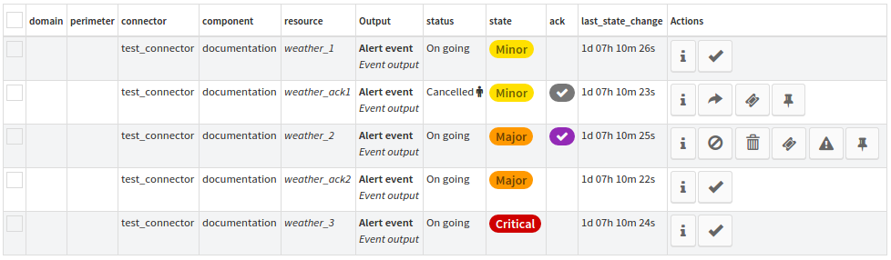

Event workflows¶
Overview¶
This section is made to understand event interaction in Canopsis. Interaction with events can be done in the user interface in a list that references events and that uses rights mixins to enable user actions on alerts.
Note
TODO: reference mixins at user guide level
Events statuses information¶
Following documentation references event statuses that are documented here .
The global workflow explained¶
When an alerts comes to Canopsis - an alert is an event that is not in off status -, Allowed users can enter the acknowlegement workflow.
Each action contains date, author and the reason information that is shown within the event list to each other users that have access to the list.
The image below display all possible actions states on events. Information about available action is shown on mouseover of each button. here is an explaination about each line of this table:
1- Event in alert, possible action : acknowledge 2- Event cancelled, possibles actions : declare ticket, associate ticket and uncancel 3- Alert acknowleged: possibles actions : remove ack, cancel ack, declare ticket, change criticity and associate ticket
The first step is to acknowlege the alert to tell canopsis the event is handled. Cancel information is then available in the acknowlegement column.
Then, is is possible to perform the following actions on the acknowleged event:
remove acknowlegement : remove the state acknowleged from the event, and the event remains the same as before it was acknowleged. All information is removed from the event on acknowlegement remove.
cancel acknowlegement: The user is prompted to input a comment that is the reason why he cancelled the event. The event status then pass to
Cancelledand the acknowlegemnt is paused until or anoffincoming event that would put the event in normal state back.- uncancel acknowlegement: can be done only on cancelled event states. When uncancelled, event is put back in the previous status by canopsis and it’s acknowlegement status is restored. The cancel information is available on the status column where an eye icon appears an displays a tooltip with uncanel information on mouseover.
change criticity: When an alert is acknowleged, the user can manually set the event’s criticity (state) with this action the user reason is asked to fill history actions.
declare incident: this action willsend an email to the configured declare incident recipient in the ticket setting parameters.
..TODO documentation reference see here
- associate ticket: Allow user to give the event a ticket number that helps associating ticketing software reference to event alerts.
When a new event comes in Canopsis in off status after an alert, the whole acknowlegement information for this event is reset and actions history remains reachable from the history view.
Below the user action workflow that users can trigger for acknowlegement management.
Ticketing and incident¶
Acknowledgement and cancellations¶
- All actions from UI are triggered by action buttons witch sends the appropriate event to canopsis. Sent events are treaten by engines and enables acknowledgement and cancellation management.
- When an event changes to an alert, it is possible to acknowlege it. The acknowledgement engine is in charge to set the right acknowledgement information to the referenced event in the ack field such as who, why and when the acknowledgement was produced.
- Once acknowledged, the acknowledgement can be removed from the alert. This will put the event in the same previous state as before it was acknowledged.
- An acknowledged event can also be canceled. This action is managed by the cancel engine. The cancel action will store information about the who, why and when in the cancel field of the event. A canceled alert put the event in cancel status.
- The canceled event can be uncanceled. This action leads to the previous acknowleged status restoration and cancel field deleted in the reference event.
- All information about acknowledgement and cancelation are kept in logged event and remains readable from the history board.
- If an event in off status comes to canopsis, the acknowledgement is reseted as it is considered as a solved alert. However, if the event was not in on going status at this moment, information about acknowledgement or cancel is kept into the event as the alert is remains logicaly unsolved.